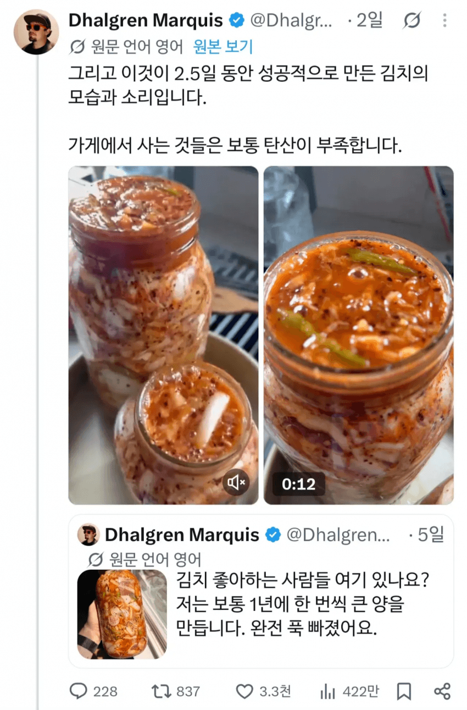

양놈이 한국인한테 김치 훈수두고 있음 ㅋㅋ

양놈이 한국인한테 김치 훈수두고 있음 ㅋㅋ
시발 김치 똥내를 외국인들이 어캐 뚫은거지
그냥 매운맛 자우어크라우트잖아 ㅅㅂ
피클처럼 먹나 보네 앀ㅋㅋㅋㅋㅋ
화씨 쓰는 새끼가 뭘 안다고 한국인한테 김치 훈수를 두냐ㅋㅋㅋㅋㅋㅋ
뭐, 빨리 익힌 김치를 먹고 싶으면 상온 보관도 하긴 하는데… 그래 걍 지 꼴리는대로 하라혀~ 대마김치, 치커리김치, 샐러리김치 별별 김치가 다 있는 마당에 뭐..
이제 3년 지나면 이상한 변종 김치들 전세계 어딘가에서 먹고 있겠다.
파인애플김치
고수김치
올리브김치
치즈김치
살라미김치
마라김치
덴뿌라김치
상온 보관이 빨리 익는게 맞음. 그 왜 신김치 전문점 여름에 빨간 대야에 김치 가득 담아서 한달만 옥상에 보관하면 바로 3년 숙성 맛 올라온다 이런애기 못들어봤나
양놈말이 틀린건 아님ㅋㅋㅋ김치 안익었다싶으면 상온에서 이삼일 뒀다 넣어놓음
음 틀린말은 아님 적게 담궈서 빨리 먹을 수 있으면 높은온도에서 빨리 익혀서 먹을 수 있지
그런데 한번 김장할때 대량 김장하는 한국인들은 저온에 두고 천천히 익혀가며 먹는게 좋지 아무래도
그리고 경험상 저온발효랑 고온에서 단시간 발효랑 맛이 다름 저온발효가 압도적으로 맛있음
고온발효는 김치 특유의 감칠맛 보다 신맛이 강조되서 별로임
하지만 김치말이 냉국수 하기에는 고온발효 김치가 조따게 맛있다
김치를 저온발효하는 이유 : 김장을 겨울 코앞두고 시작해서.
그래도 고온발효하려면 아랫목이나 부뚜막에 두기도 했다는
65G-70F 오우야
화씨로 발효하는 새끼들이 어디서 훈수여